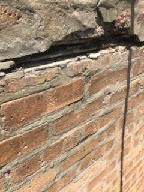
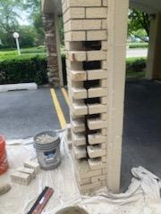

Replacing Bricks
Replacing bricks can be done for multiple reasons. However, the reason is irrelevant because the replacement can leave the wall, chimney, or fence looking identical to what it looked like before, but with new bricks and mortar.

